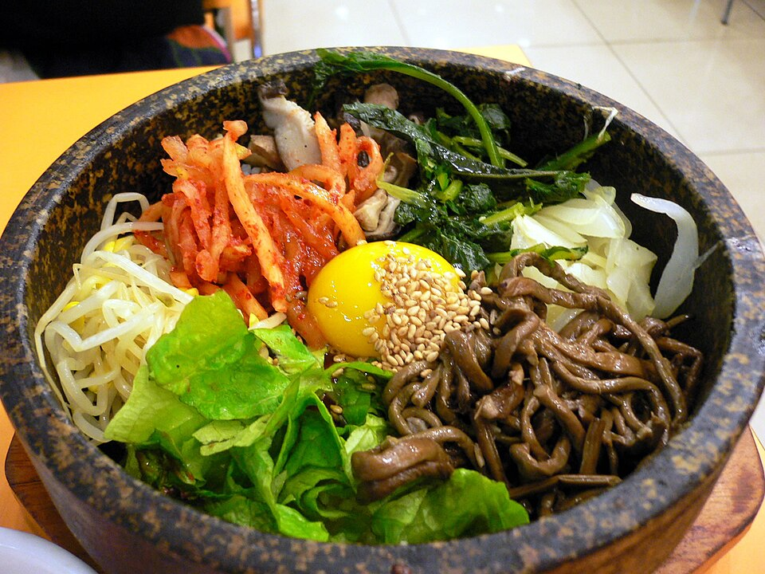
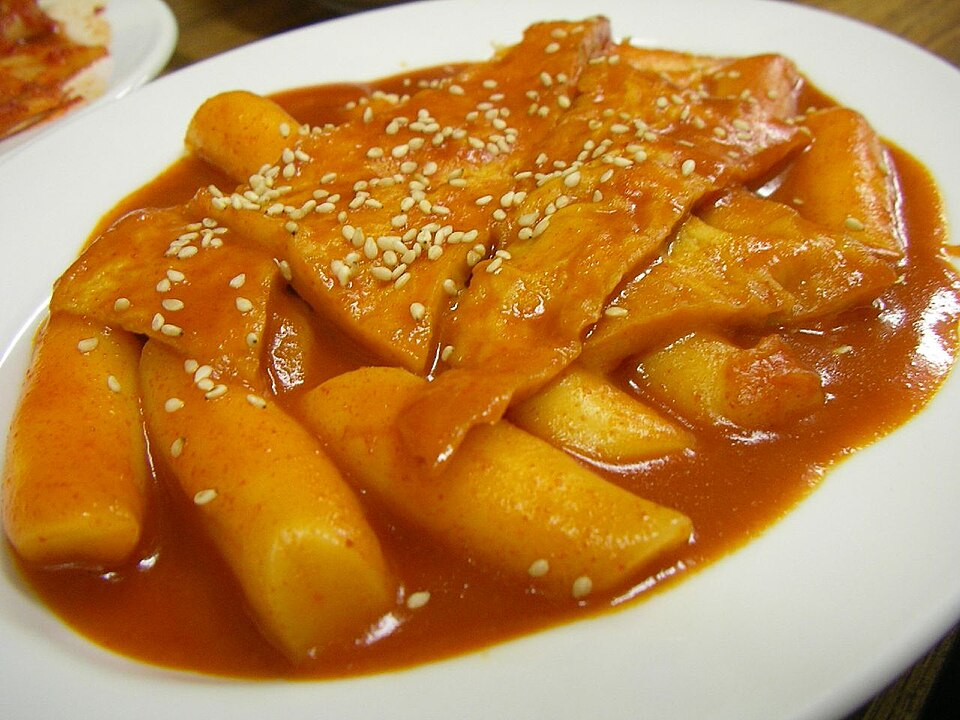
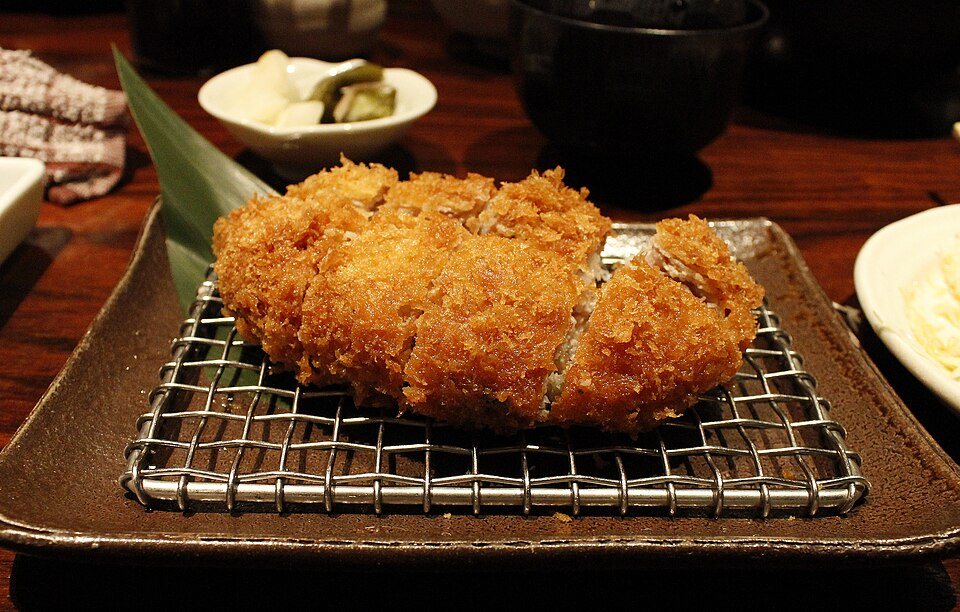
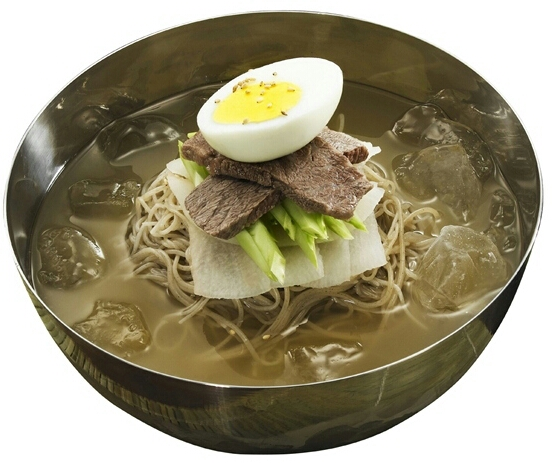
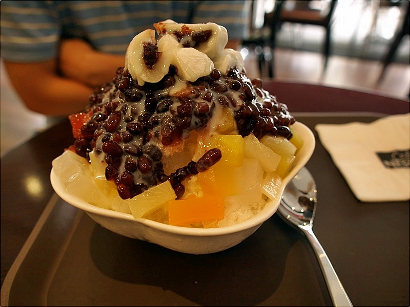
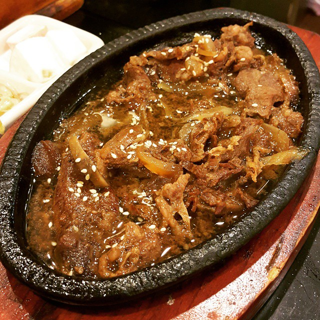

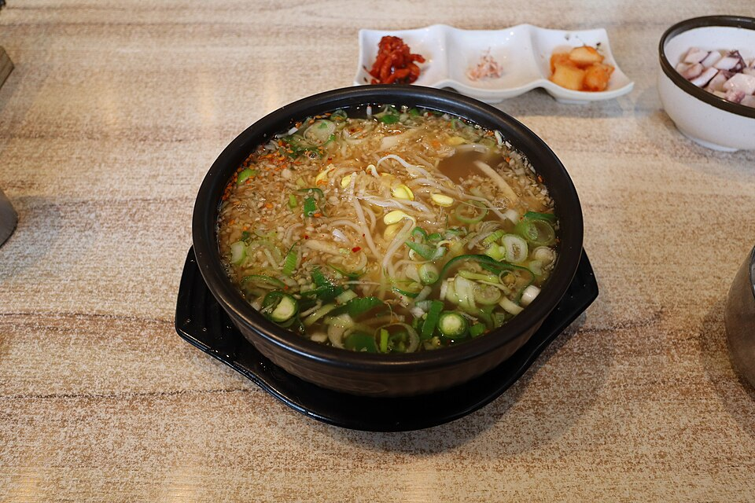
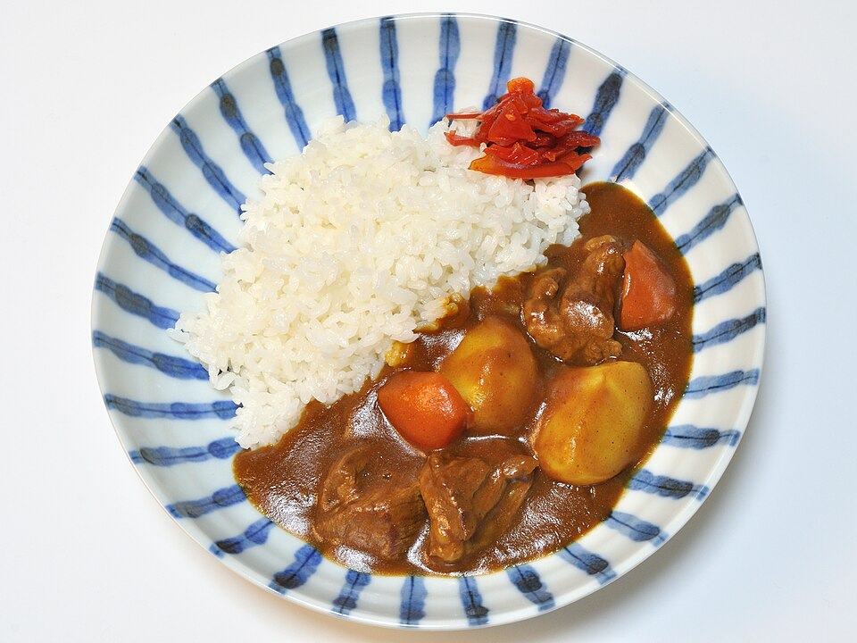
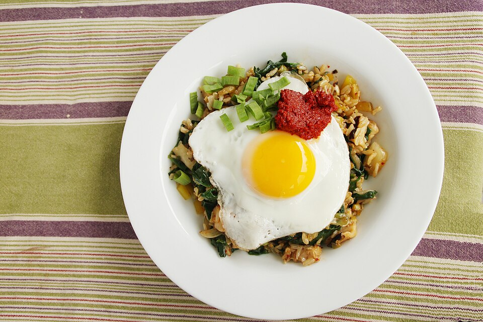
AI 보이스크
키오스크 앞에서 우리는탭을 반복하고, 고민하고, 포기합니다
원하는 메뉴를 찾으려고 카테고리를 오가며 탭을 반복합니다.
메뉴가 많은 매장일수록 고르는 데 오래 걸리고, 상황에 맞는 추천은 없습니다.
시니어·디지털 취약 고객은 뒷사람 눈치를 보며 주문을 포기하기도 합니다.
버튼을 누르고 말하면주문과 추천이 끝납니다
"제육 두 개랑 콜라 하나"처럼 한 문장으로 주문하고, "해장할 만한 거"처럼 상황만 말해도 매장 메뉴 중 맞는 3개를 이유와 함께 추천합니다. 점주는 웹에서 메뉴·사진·추천 정책을 관리합니다.
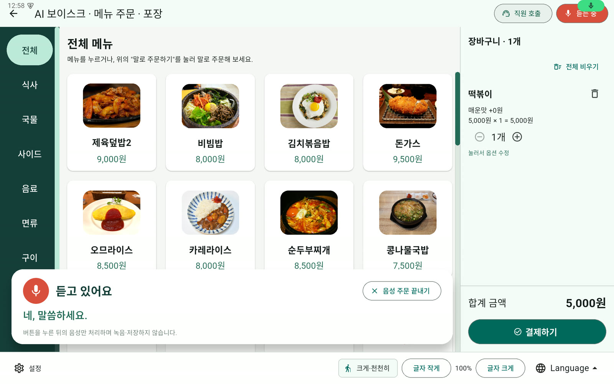
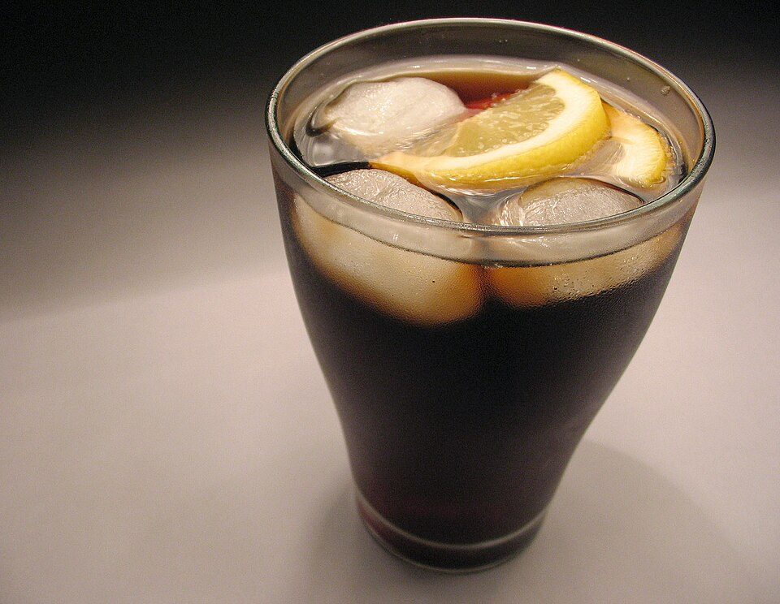
콜라1개“어제 술을 많이 마셨는데 해장할 만한 거 추천해 줘”
실제 매장 메뉴 40개로 평가한 결과(ml/voice_eval). 이유 문장은 Claude Haiku가 메뉴 태그·설명에 근거해 만들고, 순위는 키오스크 추천 엔진이 정합니다.
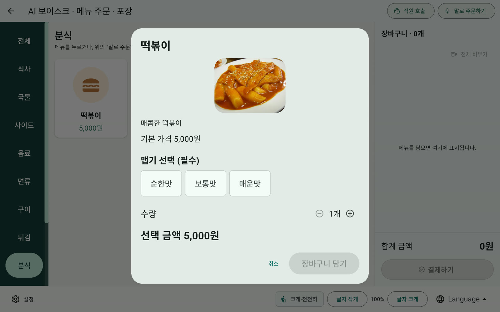
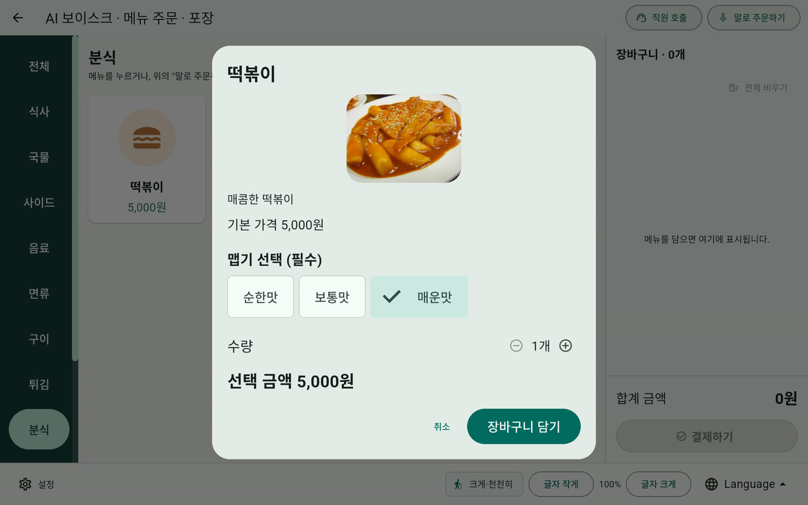
맵기·사이즈처럼 하나를 꼭 골라야 하는 옵션만 묻고, 화면 버튼으로도 고를 수 있습니다. 서버도 주문 저장 때 다시 확인합니다.
오디오는 태블릿 밖으로 나가지 않고, 글자만 서버로 갑니다
키오스크 앱
Flutter · 대화 상태 기계 · 추천 엔진 · 오프라인 메뉴 캐시 · 주문 Outbox
Kotlin 음성 엔진 (STT·TTS)점주·관리자 웹
React · 메뉴·옵션·사진 · 추천 정책 · 통계 · 기기 토큰
FastAPI 서버
기기 토큰 인증 · 음성 해석 · WebSocket 동기화 · 주문 저장
노트북 LAN 서버Claude Haiku
주문 해석 · 상황 적합도와 이유. 발화는 저장하지 않음
Azure MySQL
메뉴·주문·추천 로그. TLS 접속
AI는 해석과 적합도만, 순위는 정해진 규칙으로
후보 거르기
품절·추천 제외 메뉴를 뺍니다
적합도
Haiku가 상황에 맞는 정도(0~100)와 이유를 냅니다
기준선
기준 미달 메뉴는 이익이 커도 추천하지 않습니다
점수·정렬
점주 정책 가중치로 합산해 상위 3개
정책을 이익 쪽으로 옮기면 원가율은 내려가고 적합률은 그대로
추천 1순위 메뉴의 평균 원가율(%). 상황 질의 15개 · 같은 Haiku 적합도 결과에 정책 슬라이더만 바꿔 적용.
목표를 넘긴 것과, 아직 남은 것
네트워크가 끊겨도, 가격이 바뀌어도
오프라인 우선
마지막으로 받은 메뉴로 터치 주문을 계속 받고, 주문은 기기의 대기열(Outbox)에 쌓았다가 순서대로 보냅니다.
주문마다 고유 ID를 붙여 다시 보내도 한 번만 저장됩니다.
실시간 메뉴 동기화
점주가 저장하면 WebSocket으로 알리고, 진행 중인 주문은 시작한 메뉴로 끝낸 뒤 새 메뉴를 적용합니다.
결제 중 가격이 바뀌면 새 가격으로 다시 계산해 알려 줍니다.
프라이버시
마이크는 "말로 주문하기"를 누른 동안만 켜집니다. 녹음·저장하지 않고, 서버는 발화를 DB·로그에 남기지 않습니다.
다음 고객 준비
결제가 끝나거나 90초 동안 조작이 없으면 처음 화면으로 돌아가 장바구니와 대화를 비웁니다.
저장하면 매장 태블릿에 바로 반영됩니다
메뉴판
메뉴·옵션·필수 옵션 그룹·품절·노출 순서, 메뉴 사진 업로드
AI 추천
상황 태그·동의어·원가율, 추천 정책 프리셋(고객 적합 우선·균형·매장 이익 우선)
음성 설정
음성 주문 사용, 안내 속도, 추가 제안, 기본 사용자 모드
통계
주문 수, 음성 주문 비율, 추천 선택률, 추천 경유 매출, 인기 메뉴
직원 호출
키오스크에서 부르면 점주 웹에 바로 알림
기기 관리
기기 토큰 발급, 연결 상태, 적용 메뉴 버전
음성과 터치는 같은 주문 명령을 거칩니다
Command
담기·빼기·수량·옵션을 명령 객체로 통일. 터치와 음성이 같은 길로 장바구니를 바꿉니다
State
대기 → 청취 → 이해 → 추천·되묻기·확인 → 실행 → 결제 안내
Pipeline
후보 거르기 → 적합도 → 기준선 → 점수 → 정렬
Outbox
주문을 기기에 먼저 저장하고 순서대로 전송, 유실 방지
Repository
화면은 기기에 저장한 메뉴만 읽고, 동기화가 서버 변경을 반영
Facade
Kotlin 음성 엔진이 STT·TTS를 하나의 인터페이스로 묶음
시연 너머, 실제 매장까지
감사합니다
AI 보이스크 · Team Mallo(말로)